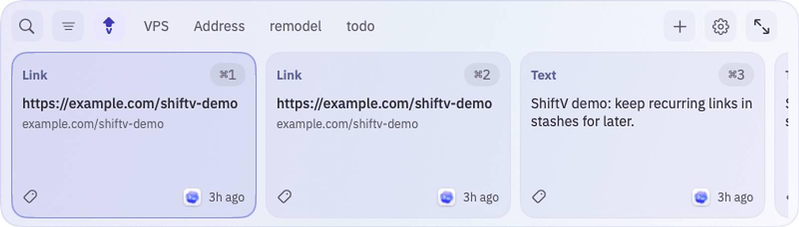
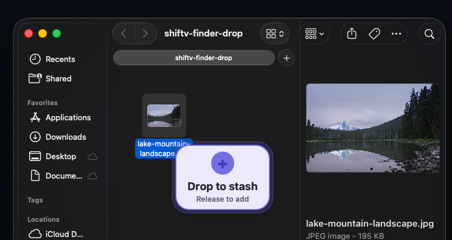
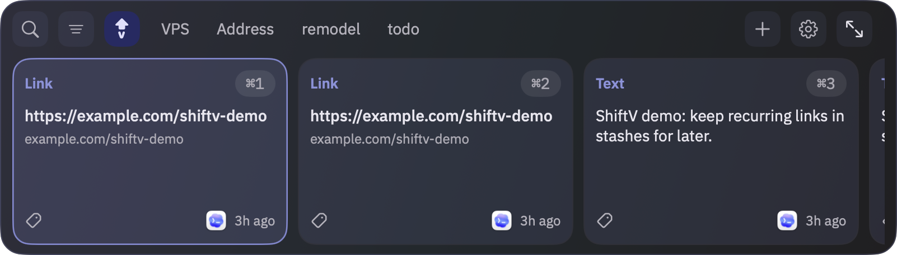

Project notes
Links from yesterday
ShiftV
Clipboard manager that stays out of your way.
Press Cmd+Shift+V to search, browse, stash, and paste anything you have copied. Text, links, images, colors, files, and snippets all live in one fast visual panel.

Everything you copy, ready when you need it.
A clipboard that feels like part of macOS.
Visual cards
Browse your recent clipboard history as clear cards with source app, content type, timestamps, and quick actions.
Search anything
Type to find copied text, URLs, snippets, OCR text from images, and saved clips without breaking your keyboard flow.
Stashes
Pin recurring links, notes, snippets, and references into tidy stashes for projects you return to often.
Local by default
Your clipboard history stays on your Mac. No account, no cloud sync, and no server between you and what you copy.
Drop bucket for quick stashes.
Drag a file from Finder into the floating bucket and ShiftV saves it as a reusable clip for later.

Match your Mac.
ShiftV keeps the same compact visual rhythm in light and dark mode. Switch between the real captures to see both panel palettes.

Install in a minute.
This is an early test build from Billy. It is not notarized by Apple yet, so macOS may show a security warning the first time you open it.
-
1
Download and open ShiftV.dmg.
-
2
Drag ShiftV.app into Applications.
-
3
Right-click ShiftV and choose Open the first time.
-
4
Allow Accessibility permissions, then press Cmd+Shift+V.
Ready to try it?
Download the latest bundled build from this microsite, or read the changelog.
SHA-256: 23e02e010b2e131e2e384a1801a4a788fa28d4ae9b6aa8c4c0cb42e486fe47cf